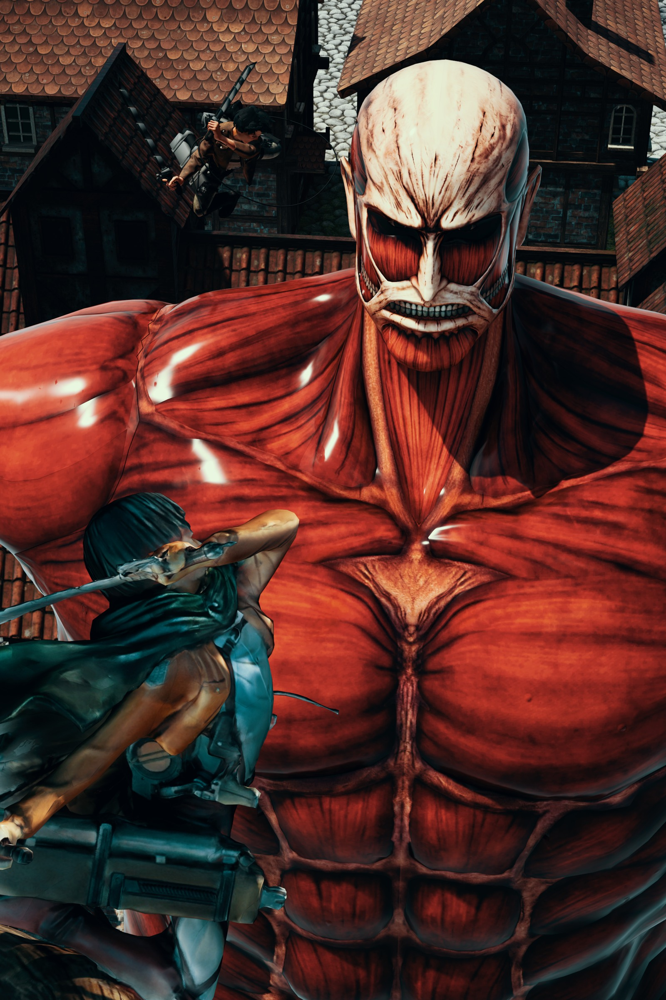
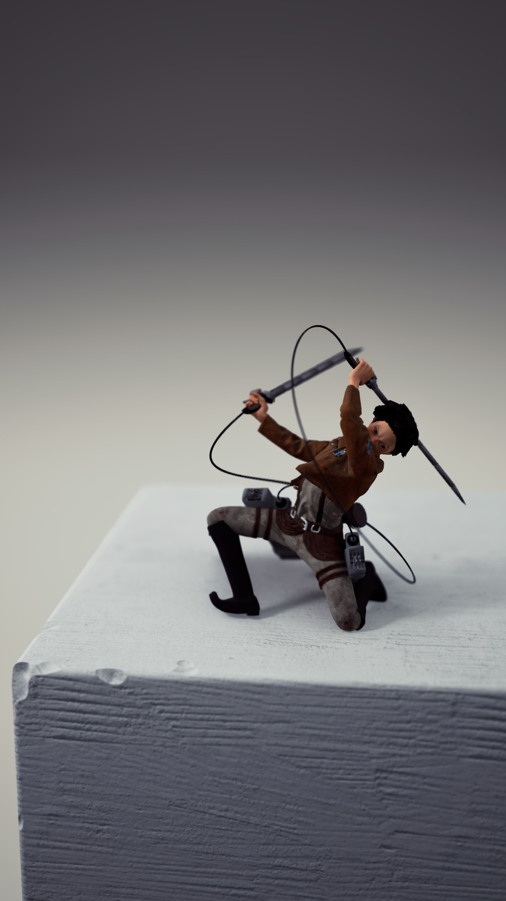
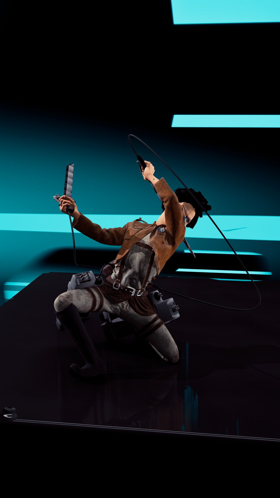

<!doctype html><html lang="zh-CN"><meta charset="utf-8"><meta name="viewport" content="width=device-width,initial-scale=1"><title>Rendering studies</title><style>body{margin:0;background:#ebe9e3;color:#232720;font:16px Arial}header{padding:24px;position:sticky;top:0;background:#ebe9e3e8}a{color:inherit;margin-right:20px}main{max-width:1300px;margin:auto}figure{margin:24px}img,video{width:100%;height:auto}figcaption{padding:10px}</style><header><a href="../index.html#works">← 返回作品</a>Rendering studies · </header><main><video controls playsinline preload="metadata" poster="../assets/rendering/Image10.jpg" src="../assets/rendering/sequence.mp4"></video><figure><figcaption>1 / 3</figcaption></figure><figure><figcaption>2 / 3</figcaption></figure><figure><figcaption>3 / 3</figcaption></figure></main><link rel="stylesheet" href="../css/v6.css?v=9dea0536d48d"><script src="../js/i18n.js?v=e2b94bbab779"></script></html>